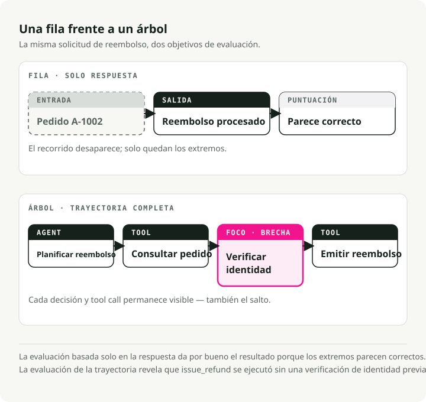
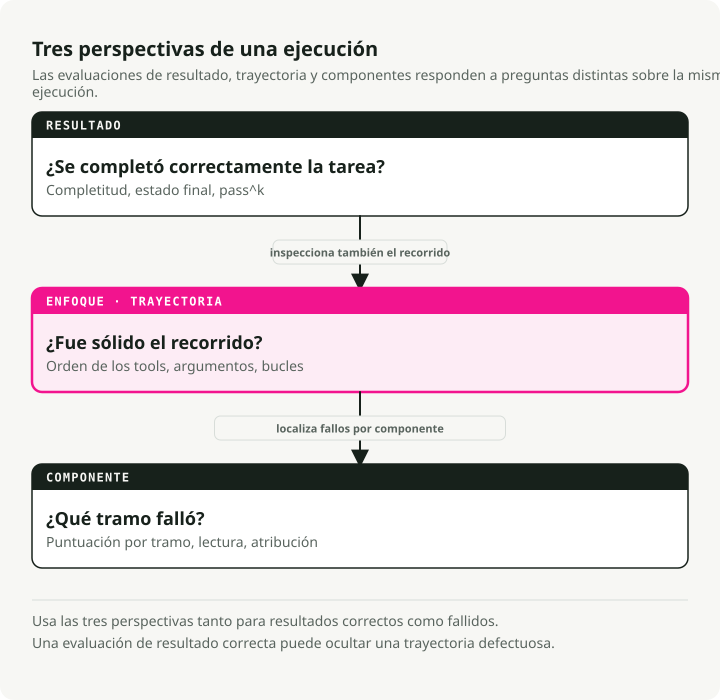
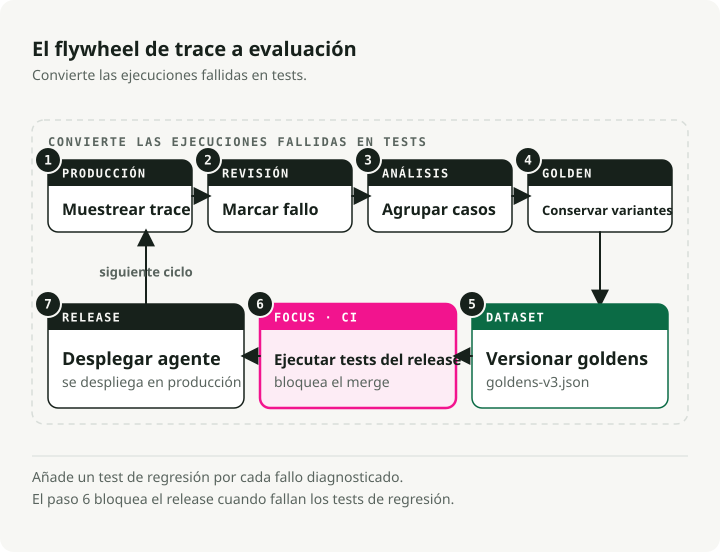
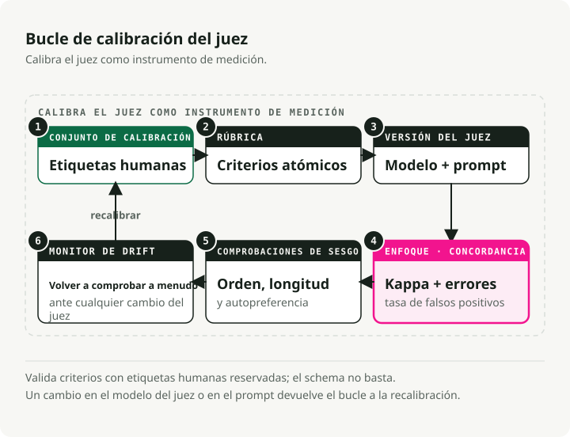
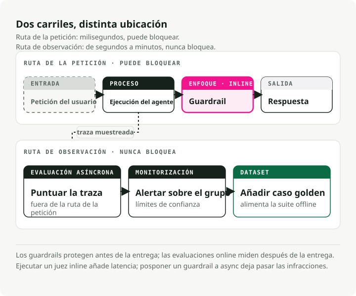

Evaluating AI Agents in Production: From Traces to Test Suites
A chatbot answer is a row. An agent run is a tree.
That difference breaks a lot of evaluation habits. The final answer can look fine while the agent skipped a required tool, retried the same call 17 times, misread a tool result, or took a path that would be illegal in production. If you only grade the answer, you miss the part where the system actually failed.
TL;DR: Agent evals need three layers: outcome metrics, trajectory metrics, and component metrics. Build around this loop: trace -> label -> cluster -> dedupe -> versioned dataset -> CI gate -> online monitoring. Use deterministic checks for tool order, arguments, loops, and invariants. Use LLM judges only where the check depends on interpretation, shape those judges with Schema-Guided Reasoning (SGR), and calibrate them against human labels before trusting them.
Why agent evals are different
Traditional LLM evals usually score one input-output pair: relevance, faithfulness, correctness, safety, maybe style. Agents add planning, tool calls, retries, and termination checks, and each step is a new place to fail.
Take a refund agent. The transcript can end well while the trace is wrong:
lookup_order -> issue_refund -> final_answer
The output eval passes. A trajectory eval should fail because verify_identity never ran before issue_refund. For tool-using agents, answer-only evals are smoke tests: they catch total breakage and miss everything else.
There's a second problem: errors compound. If a 20-step workflow is 95% reliable at each step, its end-to-end success rate still lands around 36%:
So the agent can look solid in isolated checks and still fail most full runs. The break is usually somewhere in the middle, and finding it takes component-level visibility, not another look at the answer.

Two papers make this concrete. tau-bench grades agents by final environment state, not transcript shape, and uses pass^k to expose consistency over repeated attempts. MAST studies failures in multi-agent traces and groups them around system design, inter-agent mismatch, and task verification gaps. Better base models help, but they don't remove the need to evaluate the harness around the model.
The adoption gap
Most teams already have the raw material for better evals. They have traces. They just haven't turned them into tests.
LangChain's State of Agent Engineering survey is the cleanest public snapshot of this gap. It reports 57.3% of respondents already have agents in production, 89% have some observability, 52.4% run offline evals, and 37.3% run online evals. Quality is the top production blocker at 32%.
That leaves teams in an awkward middle state: they can inspect a bad run after the fact, then still ship the same failure twice.
One rule fixes this: every diagnosed production failure should leave behind a trace, a label, a dataset row, and a scorer. If it can happen again, it belongs in the regression suite.
Pick metrics by failure mode
The right metric depends on the failure mode, not on the framework. The useful split has three scopes:
- Outcome evals answer whether the task succeeded.
- Trajectory evals answer whether the path was valid, efficient, and policy-compliant.
- Component evals answer which tool, retriever, sub-agent, or decision step broke.

Each scope can run offline (fixed, replayable cases before release) or online (sampled production traces after the response); the guardrails section below covers that split in detail. The short version: offline evals can require goldens, while online evals should prefer invariants, distributions, and async checks that stay out of the request path.
| Question | Metric family | Offline / online contract | Deterministic or judge? | Watch out for |
|---|---|---|---|---|
| Did the agent call the right tools? | Tool correctness: exact, in-order, or any-order match | Exact goldens offline; required-tool invariants and anomalies online | Deterministic | Exact match punishes valid alternate paths |
| Did it call them with the right inputs? | Argument correctness, schema validation, parameter match | Expected arguments offline; schema, range, and policy checks online | Both | Right tool plus wrong arguments is still broken |
| Did it waste steps? | Step efficiency, retry count, loop detection, cost and latency | Step and loop budgets offline; cost and latency drift online | Mostly deterministic | High task completion can hide expensive wandering |
| Did the task actually succeed? | Task completion, outcome grading, final state diff | Simulator or golden state offline; final state, user signal, or async judge online | Judge or state check | Grade the environment state when possible |
| Did it preserve context across turns? | Multi-turn fidelity, role adherence, conversation completeness | Scripted long-horizon cases offline; sampled long sessions online | Judge | Single-turn tests say nothing about turn 14 |
| Did it stop at the right time? | Termination correctness, premature success, endless work | Scenario tests offline; loop, timeout, and false-success monitors online | Both | "Done" can be a hallucinated state |
| Did it interpret tool results correctly? | Tool-result understanding, downstream state checks | Adversarial tool outputs offline; downstream state checks and sampled review online | Both | The tool can be correct while the agent reads it wrong |
Start with deterministic metrics. They're cheap, fast, and they don't drift.
Tool-call correctness
Tool correctness compares the called tools with the expected tools. Pick the strictness deliberately:
- Exact match: the sequence must match exactly. Use this when order is policy, for example
lookup_order -> verify_identity -> issue_refund. - In-order match: required tools must appear in the correct relative order, but extra harmless calls are allowed.
- Any-order match: required tools must appear, but order can vary.
A small local scorer is enough to start:
def tool_correctness(called: list[str], expected: list[str], mode: str = "in_order") -> float:
if not expected:
return 1.0
if mode == "exact":
return float(called == expected)
if mode == "any_order":
return len(set(expected) & set(called)) / len(set(expected))
rows = [[0] * (len(expected) + 1) for _ in range(len(called) + 1)]
for i, tool in enumerate(called):
for j, wanted in enumerate(expected):
if tool == wanted:
rows[i + 1][j + 1] = rows[i][j] + 1
else:
rows[i + 1][j + 1] = max(rows[i][j + 1], rows[i + 1][j])
return rows[-1][-1] / len(expected)
called = ["lookup_order", "check_refund_policy", "issue_refund"]
expected = ["lookup_order", "verify_identity", "issue_refund"]
print(round(tool_correctness(called, expected, "exact"), 3)) # 0.0
print(round(tool_correctness(called, expected, "in_order"), 3)) # 0.667
DeepEval's Tool Correctness metric exposes the same knobs through should_consider_ordering and should_exact_match.
Argument correctness
Calling the right tool with the wrong arguments is often worse than calling the wrong tool because the trace looks normal.
For simple cases, validate JSON schema and exact values. For semantic cases, store expected arguments and grade the deltas:
{
"trace_id": "tr_2417",
"input": "Reschedule order A-100 for next Friday.",
"expected_tools": ["lookup_order", "reschedule_delivery"],
"expected_arguments": {
"reschedule_delivery": {
"order_id": "A-100",
"date": "2026-06-19"
}
}
}
A tool-name metric can't catch 2026-06-17 where the policy requires 2026-06-19. The dataset has to store arguments too.
Efficiency, loops, and dead ends
The path matters even when the destination is reached. An agent that completes the task after five redundant tool calls still signals a planning problem and costs more to run.
Cheap signals you should start with:
- Redundant-call rate: identical tool calls with identical arguments repeated more than twice.
- Trace shape anomalies: sudden spikes in depth, tool-call count, token count, latency, or cost.
- Path convergence: how close the run is to the shortest known valid path for the task.
- Termination correctness: whether the agent stopped early, kept working after success, or declared success without the required state change.
Run these before a judge whenever you can. A loop detector is a few lines over the trace. It doesn't need a model.
Task completion and outcome grading
End-to-end, the question is "did the user get what they asked for?"
Two patterns work best:
- Referenceless task-completion judging: extract the goal from the input and judge whether the trace plus final answer achieved it. This works online because production traffic rarely has golden outputs.
- Environment-state grading: compare the final database rows, files, tickets, bookings, or records to an annotated goal state. This is more robust than transcript matching because agents can find valid paths you didn't write down.
The second option is better when you can build it. The final state is the contract. The transcript is only evidence.
The trace-to-eval flywheel
Don't brainstorm your eval set first. Mine production failures.

The loop:
- Capture the full trace.
- Label what failed.
- Group similar failures.
- Keep one representative golden per cluster.
- Version the dataset.
- Run it in CI.
- Keep scoring sampled production traces online.
Mine failures with error analysis
Hamel Husain and Shreya Shankar's error-analysis workflow works well here because it stays close to the traces:
- Open coding: read 30 to 50 real traces and write freeform notes on what went wrong.
- Axial coding: cluster those notes into 5 or 6 named failure categories.
- Label everything against the taxonomy.
- Build metrics for the largest buckets.
Don't start with labels like reasoning_issue or tool_problem. They're too vague to test. Use labels like missing_identity_verification, date_argument_mismatch, retried_same_tool_after_429, or stopped_before_database_update. A label that specific tells you exactly what the regression test should assert.
Deduplicate before you promote
The trace-mining loop has a trap: adding every bad trace forever. That creates a dataset that is large, expensive, and narrow. It passes on near-duplicates from March while missing the new shape of the same bug in June.
Group first. Promote one representative golden per cluster. Store the related trace IDs in metadata so a reviewer can inspect the production evidence later.
If a failure cluster recurs after a fix, the regression case did not generalize. Re-cluster and broaden the golden instead of adding 15 point examples.
Version the dataset
Version datasets the way you version prompts and code. Whenever anything meaningful changes (model, prompt, tool schema, judge prompt, or app behavior), you want to run the same dataset version before and after.
The CI gate should pin:
- dataset version
- app version
- prompt version
- judge model
- judge prompt
- evaluator code version
If any of those moves, your before/after comparison gets muddy. A goldens-v3.json file in git is fine at small scale. Tool-native snapshots in Langfuse, Phoenix, Braintrust, or LangSmith help once the dataset becomes collaborative.
Gate CI
A failing metric must become a failing build, or the eval suite is just a dashboard nobody reads.
The test should rerun the current agent against the golden input. It shouldn't merely replay the old failed trace:
@pytest.mark.parametrize("golden", GOLDENS, ids=[item["id"] for item in GOLDENS])
def test_agent_regression(golden: dict) -> None:
answer, fresh_trace = run_agent_and_capture_trace(golden["input"])
refired = set(flag_failures(fresh_trace)) & set(golden["failure_modes"])
assert not refired, f"failure mode regressed: {sorted(refired)}"
assert tool_correctness(
called=[call["name"] for call in fresh_trace["tool_calls"]],
expected=golden["expected_tools"],
mode=golden.get("tool_match", "in_order"),
) >= golden.get("tool_threshold", 1.0)
This distinction is easy to get wrong. The dataset's job is to catch the next version of the agent repeating an old failure, not to archive the failure itself.
Calibrate the judge before trusting it
LLM-as-judge helps. It's also easy to fool yourself with.
G-Eval made model-based judging more concrete for generation tasks. MT-Bench made it feel practical. Then the caveats arrived: position bias, verbosity bias, self-preference, prompt sensitivity, and drift. JudgeBench is a good warning that strong judges still struggle on objectively verifiable comparisons.
Treat the judge as a measurement instrument.
When a judge is required, make the verdict structured. Schema-Guided Reasoning (SGR) is the default pattern here: define the judge's reasoning path as a Pydantic schema, run it through Structured Outputs or constrained decoding, and force the model to emit fields like evidence, passed_criteria, failed_criteria, failure_mode, and score.
That does not make the judge magically correct. It does make the measurement more reproducible. The judge has to walk through the same predefined rubric steps, in the same field order, on every run and across every compatible model. A reviewer can inspect named fields instead of parsing a paragraph. CI can diff a stable JSON object. Calibration becomes easier because the rubric is no longer buried inside free-form prose.
It also changes the cost curve. When the reasoning topology is explicit and the output is constrained, cheaper models often become good enough for routine judging. Save the bigger judge for disagreements, high-risk cases, or calibration runs instead of paying for it on every trace.

| Bias | What happens | Mitigation |
|---|---|---|
| Position | Pairwise prompts favor one slot | Swap order and average both permutations |
| Verbosity | Longer answers score higher even when quality is unchanged | Penalize unsupported verbosity in the rubric |
| Self-preference | A judge favors its own model family | Use a different model family or a jury |
| Sycophancy | The judge credits unverified claims | Require evidence from the trace in the verdict |
| Calibration drift | A model or prompt update shifts scores | Pin judge model and prompt; recalibrate on change |
Default judge hygiene checklist:
- Prefer binary pass/fail where possible. Five-point scales invite fake precision.
- Hand-label 30 to 50 trajectories before writing the final rubric.
- Measure judge-human agreement with Cohen's kappa or plain TPR/TNR.
- Decompose coarse criteria. "Did the agent verify identity before the refund tool call?" beats "Was the trajectory good?"
- Emit the verdict through an SGR schema with evidence, failed criteria, failure mode, and score.
- Use a judge from a different model family than the generator when possible.
- Randomize pairwise order and average both directions.
- Pin the judge model, prompt, dataset, schema, and app version.
- Recalibrate after model, prompt, tool, policy, or schema changes.
For high-stakes scores, use a small jury. PoLL showed that a panel of smaller, diverse judges can beat a single large judge in several settings at lower cost. Keep human review for decisions that affect money, access, safety, or compliance.
If a judge agrees with humans at 0.55 kappa on your task, don't use it to block deploys. Use it to sort review queues. If it sits near 0.75 and the failure cost is moderate, a CI gate is much easier to defend.
Online evals are not guardrails
People mix these up because both produce scores. They sit in different places.

Guardrails run inline. They are fast, deterministic, and user-visible. A guardrail can block a tool call, redact PII, reject prompt injection, or force a retry before the response leaves your system. A false positive is a production bug.
Offline evals run before release. They are reproducible. They gate prompts, models, tools, retrievers, and policies against a fixed dataset.
Online evals run after the response, usually on sampled traffic. They can use slower LLM judges because they are not in the latency path. Their job is to detect drift, find new failure clusters, and feed the next offline dataset.
Get the placement wrong and it hurts either way:
- A judge in the request path adds latency and a new source of flakiness.
- A guardrail relegated to async scoring lets policy violations reach users.
For high-volume systems, score a small sample with a stronger judge and a wider sample with cheaper classifiers. Alert on clusters and confidence bounds, not one noisy point estimate.
Tooling choices
No single tool owns the whole loop. Most serious stacks use two pieces: a trace store and a CI/eval runner.
| Tool | Best fit | CI story | Self-hosting story | Trade-off |
|---|---|---|---|---|
| DeepEval | Pytest-native agent and LLM evals | Strong: deepeval test run fits CI |
Core library is local/open source | Judge calls and cloud features can add cost |
| Inspect AI | Safety, frontier, sandboxed evaluations | CLI and Python API | Fully local/open source | Not a production trace platform |
| Phoenix | OTel/OpenInference tracing plus evals | Custom scripts | Strong self-host option | Managed alerting lives in the commercial layer |
| Langfuse | Trace store, datasets, prompt versions | Experiments and custom gates | Strong self-host option | Eval metrics are less batteries-included than DeepEval |
| LangSmith | LangChain/LangGraph tracing and evals | pytest, Vitest, GitHub workflows | Enterprise self-host | Closed source; watch per-seat and trace-volume pricing |
| Braintrust | Eval-driven product loop and PR review | Very strong managed PR regression flow | Enterprise/hybrid | Span volume, processed data, and score count can add up |
| Promptfoo | Prompt tests and red-team suites | GitHub, GitLab, Jenkins, CircleCI | Local/open source core | Great pre-release runner, not a trace hub |
The trade-off notes describe where cost comes from, not what it is. Pricing pages move, and vendors count different things: traces, observations, spans, scores, users, retention, or processed data. Recheck live pricing before committing.
Decision shortcuts:
- Need self-hosted tracing with OTel portability: start with Phoenix or Langfuse.
- Need a code-first CI gate: start with DeepEval.
- Already committed to LangGraph: LangSmith is convenient.
- Want managed PR regression review: Braintrust is hard to beat.
- Security and red-team cases dominate: Promptfoo is the focused tool.
- Safety research or controlled benchmark work: Inspect AI is the better fit.
Tool choice is secondary. If production failures don't become test cases, you're mostly paying for trace storage.
A practical rollout checklist
Before the implementation gets clever, build the evidence pipeline. The first question is not "which metric should we optimize?" It is "where will the examples come from?"
-
Collect historical runs first. If the agent already exists, pull traces, support tickets, bug reports, thumbs-down sessions, manual QA transcripts, and dogfooding notes before changing the implementation. If the agent does not exist yet, log every prototype and manual test run from day one.
-
Instrument the trace shape. Capture messages, tool calls, arguments, tool outputs, errors, token counts, latency, cost, user feedback, app version, prompt version, model version, tool schema version, and final environment state. Use OpenTelemetry GenAI conventions or OpenInference-style spans if you want portability. Use Langfuse, LangSmith, Phoenix, or Braintrust if you want a trace UI and dataset workflow immediately.
-
Turn real failures into seed cases. Read the traces before summarizing them with a model. For each useful failure, store the input, source trace ID, expected state, expected tool invariants, failure mode, severity, and reviewer note. Langfuse can link dataset items back to production traces; LangSmith can create datasets from traced runs. Keep the source link so the case remains auditable.
-
If there is no history, generate cold-start cases. Ask an LLM to draft tasks from product requirements, policies, tool schemas, state machines, and support macros. Generate both happy paths and "should not happen" cases: wrong permissions, missing identity checks, stale tool results, ambiguous dates, retries after rate limits, and tool outputs that contradict the user's request.
-
Do not trust synthetic cases until a human reviews them. Synthetic examples are useful for coverage, not truth. Mark them with
source: synthetic, require a reviewer to approve the expected outcome, run a known-good reference path when possible, and avoid using the same model family to generate the case and judge the result. -
Build a small balanced dataset. Include successes, failures, refusals, boundary cases, long-turn cases, policy-sensitive cases, and valid alternate paths. Do not make the golden "the exact old transcript." The golden should encode the required outcome, allowed invariants, and failure mode.
-
Add deterministic checks first. Required tool order where order is policy, required arguments, schema validation, final-state diffs, loop limits, token and latency ceilings, and task-specific invariants should run before any judge.
-
Add one SGR-shaped judge. Use it only for the part that needs interpretation. Calibrate it against human labels. If it cannot separate good and bad examples on the calibration set, fix the rubric before wiring it into CI.
-
Wire the loop. Run the small offline suite in CI, run the larger suite before release, score sampled production traffic online, and promote recurring online failure clusters back into the offline dataset.
Your first eval suite will be wrong in boring ways. Ship it anyway. A suite you run every day is easier to fix than a perfect design doc that never blocks a bad PR.
Key takeaways
- Agent evals are trace evals. The final answer is only one node in the run.
- Tool selection, argument correctness, loop detection, task completion, and multi-turn fidelity belong in separate metrics.
- The production flywheel is trace -> label -> cluster -> dedupe -> dataset -> CI gate -> online score.
- Start deterministic. Tool checks, argument checks, state checks, and loop detectors are cheaper and more stable than judges.
- LLM judges need structure and calibration. Use SGR for reproducible, inspectable verdicts, then pin the judge model, prompt, schema, dataset version, app version, and human-label sample.
- Offline evals gate known cases before release. Online evals mine sampled production traces after the response. Guardrails block unsafe behavior inline.
- Most teams need a trace store and a CI runner. Pick boring tools that make production failures become regression tests fast.
References
- LangChain - State of Agent Engineering
- Anthropic - Demystifying Evals for AI Agents
- Hamel Husain - A Field Guide to Rapidly Improving AI Products
- OpenTelemetry semantic conventions for generative AI systems
- DeepEval Tool Correctness
- DeepEval Task Completion
- Schema-Guided Reasoning on vLLM: Structured Outputs with xgrammar and Pydantic
- Langfuse datasets and versioning
- LangSmith - Create and manage datasets programmatically
- Braintrust - Evaluate systematically
- Phoenix LLM evals
- Promptfoo GitHub Action integration
- tau-bench: A Benchmark for Tool-Agent-User Interaction in Real-World Domains
- Why Do Multi-Agent LLM Systems Fail?
- G-Eval: NLG Evaluation using GPT-4 with Better Human Alignment
- Judging LLM-as-a-Judge with MT-Bench and Chatbot Arena
- Replacing Judges with Juries: Evaluating LLM Generations with a Panel of Diverse Models
- JudgeBench: A Benchmark for Evaluating LLM-based Judges
- Self-Preference Bias in LLM-as-a-Judge